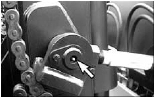

Mast Pivot Eyes  Typical Example Lubricate two fittings for the mast pivot eyes, one on each side of the mast. Check the pivot eye pins for loose retainer bolts and wear. Parent topic: Every 500 Service Hours or 3 Months